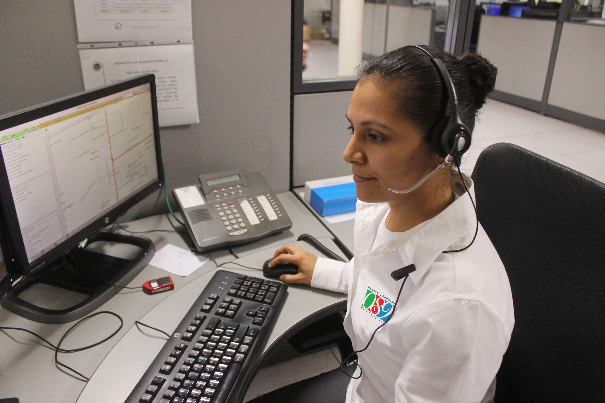

Yes, there are a few top class consultants in our country who do not have DM or MCh and yet they have made a mark in the higher specialities. Dr.Amit Maydeo, Interventional Gastroenterologist, Mumbai, is one such.
read more

LABOTARY
A medical laboratory or clinical laboratory is a laboratory where clinical pathology tests are carried out on clinical specimens to obtain information about the health of a patient to aid in diagnosis, treatment, and prevention of disease.
read more
BLOOD PRESSURE
The previous guidelines set the threshold at 140/90 mm Hg for people younger than age 65 and 150/80 mm Hg for those ages 65 and older. This means 70% to 79% of men ages 55 and older are now classified as having hypertension.
read more